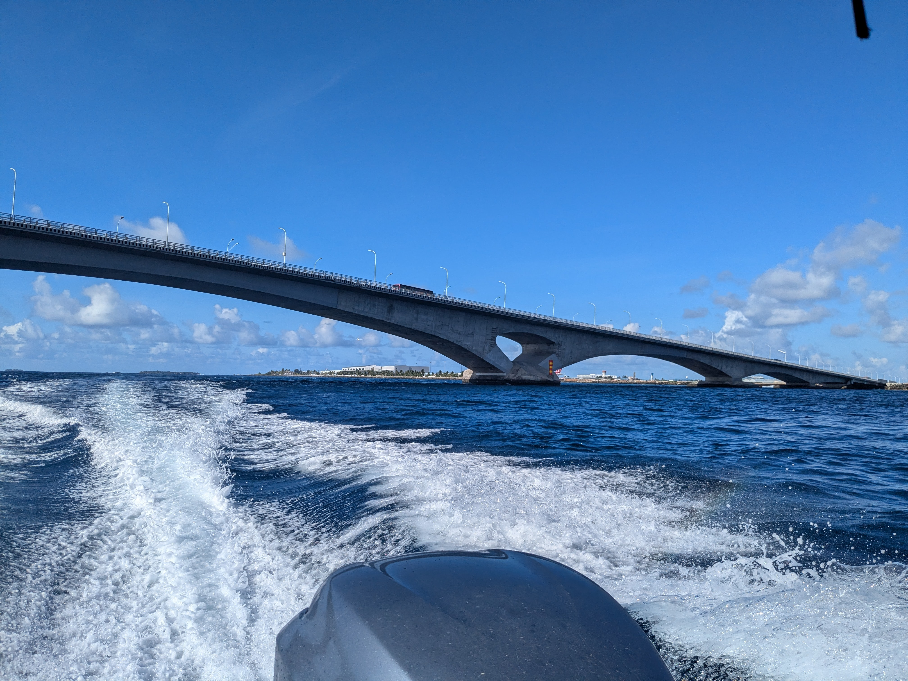
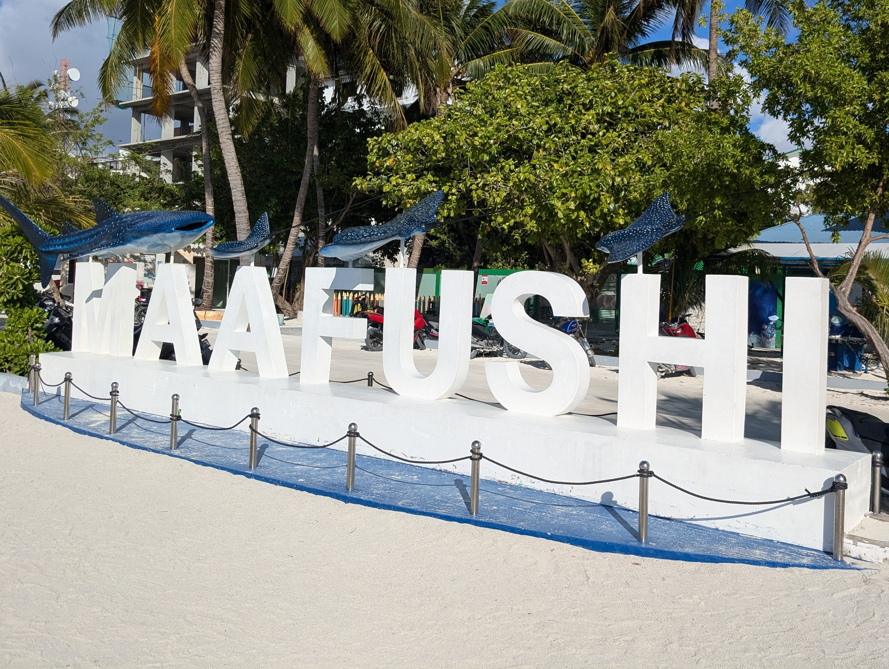
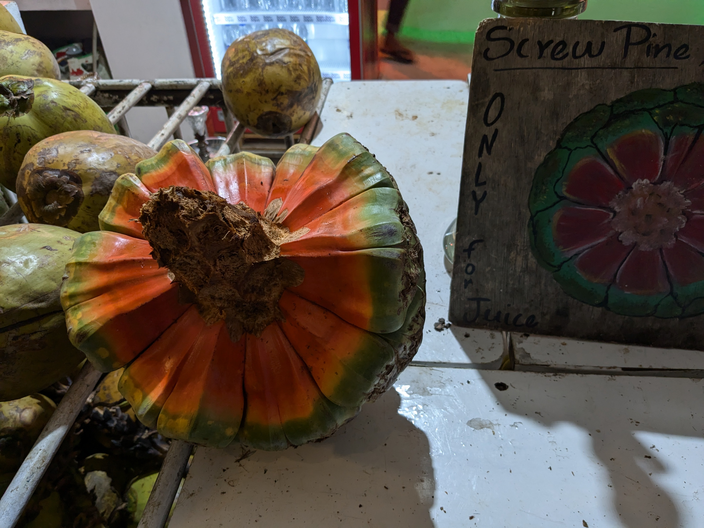
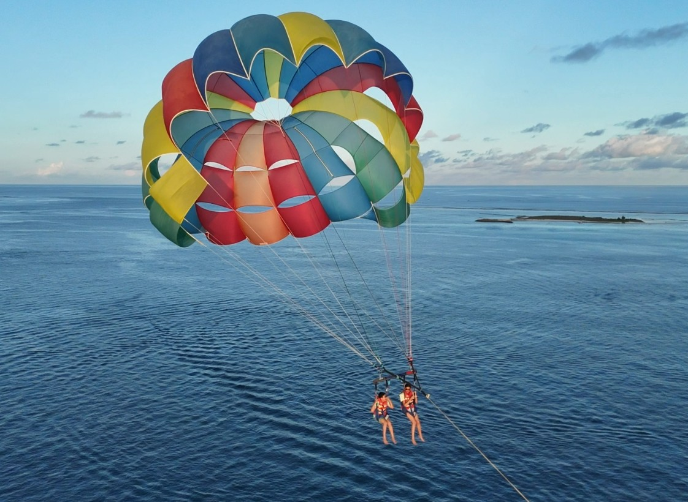
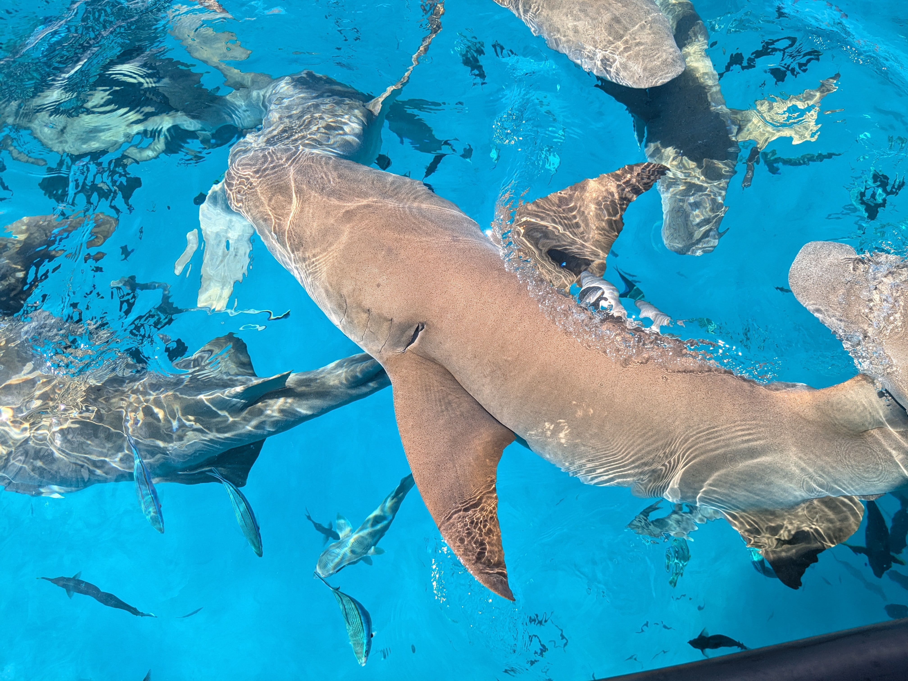

This was an adventure that I was dreaming for months, and now here we were about to board an airplane bound to one of the coolest places on earth. In short, I was delighted, to be out of the city and into a place as magical as those in fairy tale lands. As soon as we started to descend from the thick misty clouds, we almost at once caught sight of the beautiful turquoise waters not knowing how exactly exuberant it really was. We landed on an airport which sort of had its own island right beside the capital city of Malé. My first reaction was that I felt hot, really hot but, that was very short lived as the water in the harbour near the airport took my breath away, from where we caught our own private speedboat from the hotel that we were going to spend the next few nights in. We hadn’t really noticed much of the boring plane ride so we really enjoyed the speedboat ride with the sea splashing us. The boat ride from Malé to Maafushi (the island the we were going to stay in) lasted about 30 minutes. We reached Maafushi pier which had those big letters that spell out the name of the place.


We took a few pictures there and then took a very short walk to our hotel whilst our luggage was carried by a modified golf cart. We checked into the hotel and they gave a welcome drink. Slurp! We got into our room, and it was perfect with a view of the perfectly blue sea and white sandy beach. It was there where we spend most part of the trip in. We were very hungry, so we decided to go and explore the different shacks close to our hotel. We saw the recommendations of the the tourists that had been there before and narrowed it down to a few and decided to go to the closest one. The food was great and along with a band playing live music and the occasional silent yet charming sound of the sea. We were exhausted and so we went to our hotel and into probably one of the best nights sleep I’ve ever had.
It was hard to get used to see sea ( ha ha that’s funny) all around you instead of always seeing nothing but boring city buildings. Another thing that we weren’t use to, was exactly how small this Island was, I mean it was only about 1 km big. In a city you have to take a car almost everywhere but here you can walk the whole length of the Island! Still apart from that, the island had loads of places to go to, tons of restaurants and shacks to eat at, so no worries about food or anything like that. There were a few shacks that had packages for water sports and a few for snorkelling and scuba diving. But for today we just wanted to explore the island a bit. It was pointless to explore in the afternoon as it was too hot so, adventuring would have to wait. In the evening we walked around to the different stores and surprisingly there was a huge supermarket there selling everything from grocery to souvenirs. We bought some ice cream and kept exploring all around the island.

A fruit that is endemic to Maldives. It is called a Screw pine and is used to make juices.
After a bit of exploring we got a bit hungry so we went to a restaurant in the inland part of the island unlike the previous one which almost right beside the beach. The restaurant had a few cats all around but, that didn’t bother us. Once again the food was delicious. We returned to our hotel and just like that another day had ended.
In Day 2 we didn’t really do much at all, well, not as much as today. Today was halloween so, the hotel had a special celebration. But before that we decided to chill around in the beach, swim. We played with a frisbee and saw many fishes with our GoPro one of which we mistook for a black tipped reef shark (who knows it could’ve been…) and went back to the hotel. The first half of the day was very much the same as day 2 but the second half was where it got interesting. As I mentioned before there were many shacks for water sports and so my sister and I decided to do parasailing. Except my sister was terrified (I mean so was I, sort of.) but we put caution to the wind and went for it. We went back to the harbour since that was where all the boats for parasailing left from. We sort treaded over the other boats as ours was out toward the sea. We and two other people who were also going parasailing got into our boat. There were two instructors, one that drove the boat and one that did the other stuff. They were playing a lot famous songs that we had heard before, this kind of killed the nervousness or so I thought. The two guys went before us and then after they were done it was our turn. To start off it was pretty breezy. Only the part where we went up was a bit scary but after that it was amazing. The view was something I could get used to. We could see endlessly from up there and we also had seen the beautiful sunset. We took the GoPro to capture the view but nothing could possibly capture what we saw. The instructor had also been taking videos and pictures via a drone.

A picture of my sister and I parasailing.
After about 10 minutes we slowly started to come down but I was too awestruck to notice that. It wasn’t that scary after all. After a short journey back to the jetty, we went to our hotel and freshened up. As soon as we got out of our hotel we were greeted by the sound of loud music playing on stage right beside our hotel. We were expecting this, of course as we had dressed up for the occasion. There was a Dj playing music and the whole place was decorating in a halloween theme. It looked tempting but we had to eat first, so we went to the same shack where we had eaten the day before. After that we went to the halloween party just for a tiny bit and also for some pictures and went back to the hotel.
Today was the day that we were going to have what could possibly be the biggest adventure that we’ve had. My parents had arranged a snorkelling package a few days before with a company and now here we were on the jetty about to board on a boat. There were two boats from the same company and we were assigned one. There were a few others besides us as the boat was pretty big. After getting all our snorkelling equipment we were off and into the vast blue ocean. When we were out of the island’s radius we saw a shiny gleam in the ocean just a glimpse and then there were two and then three and then four… We were looking at dolphins! It was quite far away and we soon lost sight of them. We rode on for a bit more and then we stopped. The sea was a bit shallower here but still deep as we would find out later. The instructors knew the exact spot where we would snorkel with our first creature.

A nurse shark roaming around our boat.
The whole experience was flabbergasting and we could hardly believe what had just happened. After swimming with the sharks, we went near the boat and hung on to the rope anchoring the boat where we were twisted and turned by the ocean current and did our own bit of snorkelling albeit without the sharks. We saw thousands of fish and a few corals too. After a bit, our parents were done too. We went back into the boat. After this experience, I thought we had seen the best and that nothing could top that off, boy was I wrong. After leaving the nurse sharks we were heading to our next destination where we would see Manta rays. After a while we stopped again. This time to see Manta rays. These magnificent, shy creatures were hard to chase but they were beautiful resembling birds but in the ocean. After seeing them we went to a nearby island where we would stay for lunch and see another creature… The stingrays! Like the sharks the stingrays were being fed by the instructors and so they came near the shore so we could see them up close and take some great pictures of and with them. After that the guides took us to a beach and started serving lunch. Tuna with fried rice and apple juice, Deelicious! After eating a tasty lunch we roamed around the beach and then went back into the boat to our final destination, the sandbank. The sandbank was a very thin piece of land. At its thinnest point, it had waves coming from both sides thus submerging it. The instructors brought out their drones and made us sit in a certain way to take a good video. After spending a while there, swimming and playing with sand, sadly, it was time to go. The instructors played music and we danced a bit in the boat. We finally arrived at the harbour were we got off. We spent a few hours in the beach and went back to the hotel. We freshened up and went to our favourite shack for the last time. We packed up for the next day and settled down for a good night’s sleep with only memories flashing by us of the beautiful creatures we had seen.
After the excitement of Day 4, it really was heartbreaking to leave this place and all of its adventures behind. We checked out of the hotel and went to the harbour. The hotel had arranged a boat similar to the boat from yesterday for us and everyone who were checking out too. We boarded the boat and set off to the airport island. It was rainy and cloudy as though the place was telling us not to go. After a very bumpy boat ride, we reached the airport. We didn’t have any lunch, so we went to the food court and ate some burgers. We went through security check. After that we went to our gate and back on an airplane bound for home. Unlike other trips, this one was one that I wouldn’t forget ever and so I closed my eyes and smiled still reflecting on our experience.